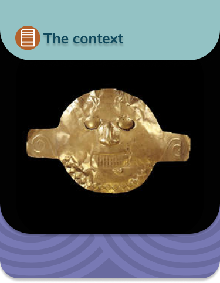

Funerary Mask:
Period:
Yotoco (200 BC – 200 AD)
From:
Palmira, Valle del Cauca
Made of:
Gold
Technique:
Embossed Hammer
Use:
this mask was used in funerary ceremonies by the shaman

In 1992, in the plain of Valle del Cauca, a cemetery of chiefs from the year 200 AC was destroyed and looted. Archaeological excavations in nearby places produced information about life at that time, but knowledge about the circumstances in which this important cemetery was formed and about the people buried in it was lost forever.
Gold and ceramic objects of great quality and size were frequent in Malagana. They seem to have been made to be used only as funerary furnishings because they do not show signs of wear. Some of the deceased were buried in the rich cemetery of Malagana with several superimposed masks. These masks were symbols of death, some resembled skulls, others a face with no life on it.